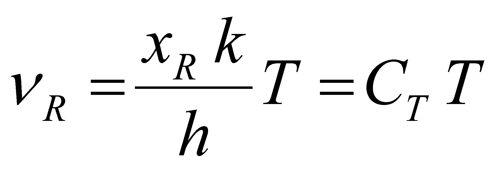
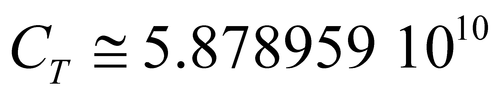

| INDEX |
According to the definition X.24.6.1, the heat contained into an atomic or molecular medium (NM) has a finite set of thermal photons as its support, and they are kept (partly confined) into the interstitial volume of that medium. Based on the facts presented so far in this annex, these photons are material objects with a finite energy stockpile depending only on the photons frequency, stockpile which is distributed into a finite volume with a constant cross section on the propagation direction. The energy distribution of the heat’s support photonic medium is uneven and specific - Plank distribution. As we saw in the chapters focused on distributions and objects, a set of objects from the same class (in this case, photons) have a common model (the class model) and specific attributes (for the objects differentiation). These specific attributes are determined against an unique reference value for the entire set of objects with a simultaneous existence.
As for the thermal photons, we have noticed that the frequency is the distinctive attribute, but it is also likely that the volume occupied at a given moment by a singular photon to be distinct as well (the space-temporal exclusion to be valid). For the time being, we are only interested in the frequency attribute because it is the decisive attribute of the photons energy, and a similar type of reference (a frequency as well) is required for its evaluation. If the absolute artificial references (with zero value) are mostly used in the scientific papers, as regards the material natural systems, there are references which are auto-set as a result of a very large number of interactions deployed between the elements of the material system. In the previous section, we saw that there is a natural reference applicable even for the energy attribute contained by a thermal photon, reference which is associated to the peak value of Plank distribution, that is an energy which according to the relation X.13.8.1.8 is related to the following frequency:
 (X.24.9.1.1)
As a result of replacing the values of the component parts constants, the value of constant CT results to be [Hz/K]. The relation X.24.9.1.1 shows a direct dependence between the reference frequency of the normalized Plank distribution and the absolute temperature, the Kelvin units being simple numerical values by which the value CT is multiplying.
Definition X.24.9.1.1: The temperature is a global attribute of the stochastic medium of the thermal photons, medium which is in equilibrium with a NM and placed into its interstitial space, attribute which is direct proportional with the internal reference frequency of the spectral distribution of the photonic medium.
Comment X.24.9.1.1: This way of defining the temperature is consistent with one of the basic properties of this attribute, namely the fact that, the temperature, as well as the frequency, do not have additive features. As it is known, neither the temperature nor the frequency can be added, but they can be compared (by means of subtraction) and the difference between them can be also determined. As for the absolute temperature, any value of the temperature is a simple multiplication factor of the frequency which is associated with a Kelvin, value which is given by the constant CT. The definition of temperature as a frequency reference of a set of thermal photons which coexist with the elements of a NM has another advantage: the renunciation to a fundamental amount - temperature - is possible, together with its units of measure, and the utilization of the frequency units only (or energy associated with this frequency).
For the reader, it is obvious that, taking into account the direct dependence relation (Plank relation ) between the frequency of a photon and the energy stored inside it, an energy shall correspond to a reference frequency , the energy of most of the thermal photons from the photonic medium with the temperature T (given by the relation X.24.9.1.1). Otherwise speaking, the temperature of a NM represents a global attribute of the potential caloric energy contained into the stochastic medium of the thermal photons included in that particular medium.
Copyright © 2006-2011 Aurel Rusu. All rights reserved.